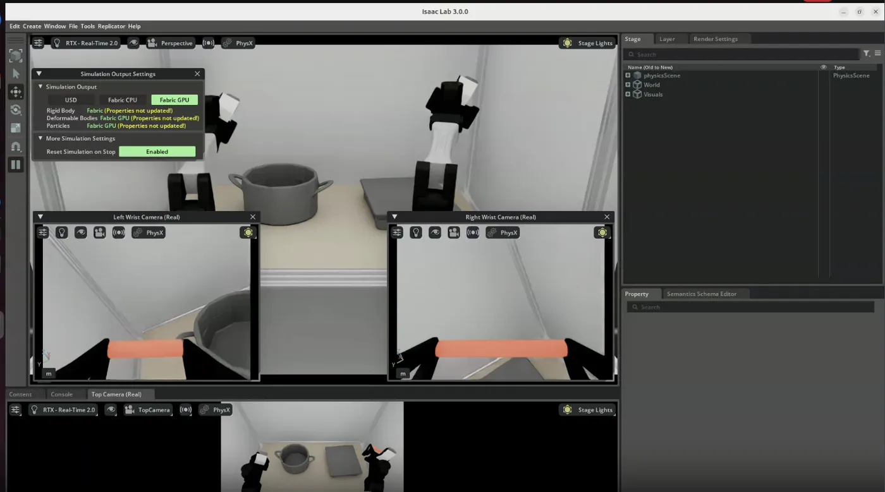
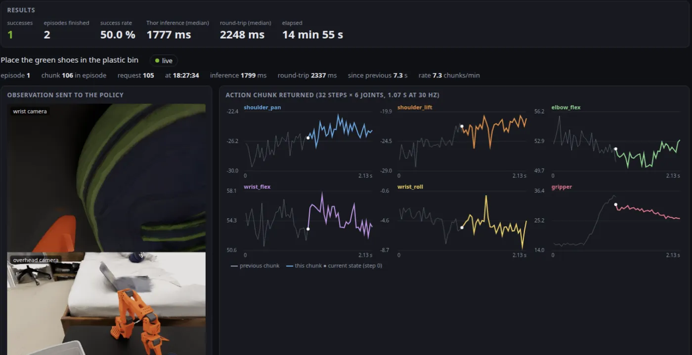
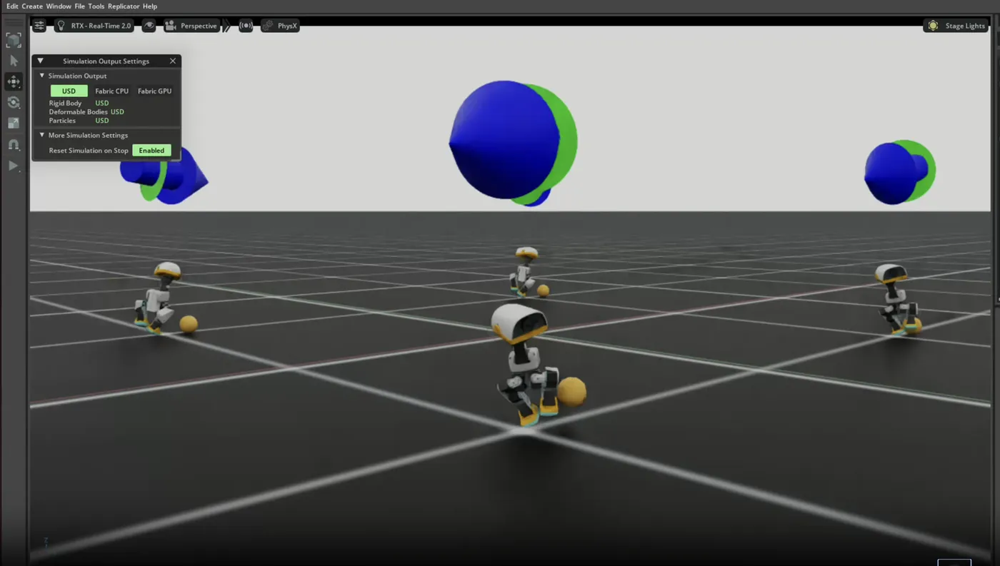
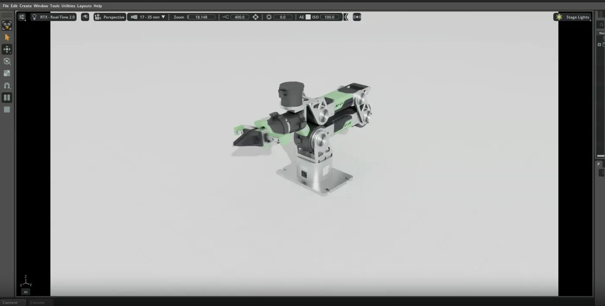
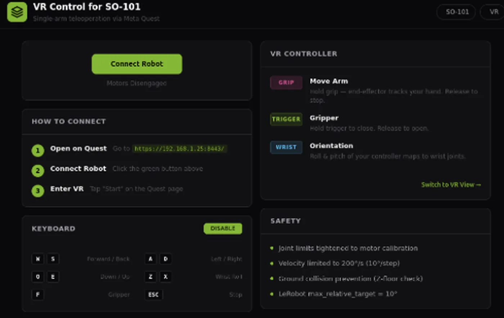
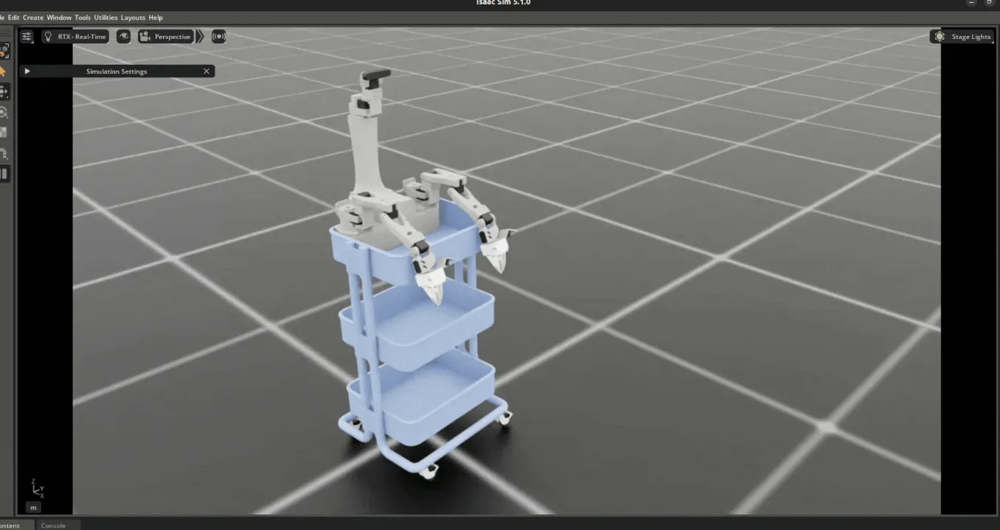
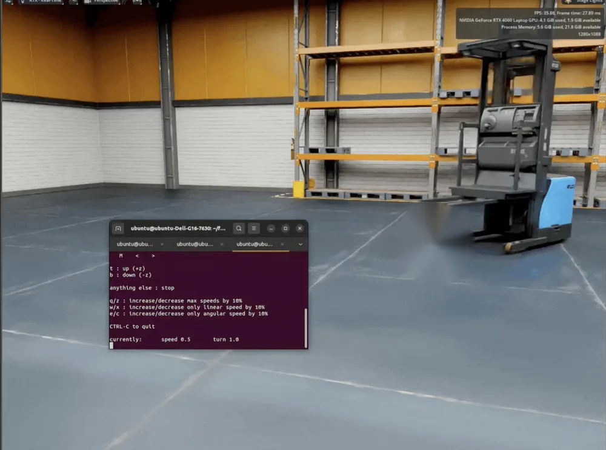
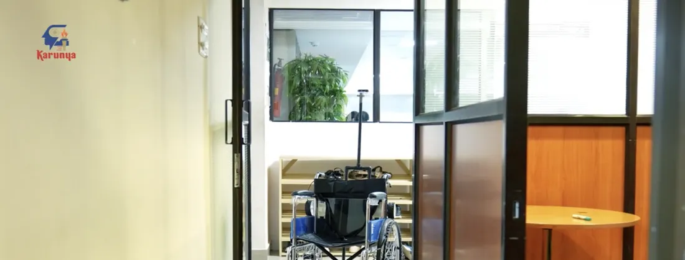

Roboticist building open-source robot learning pipelines that start in an NVIDIA digital twin and end on real edge hardware.
Teleop rigs that collect data, reinforcement learning that trains thousands of robots at once, and vision-language-action and world models running on Jetson AGX Thor and GB10.
Eleven open-source projects, newest first, each with measured results. Most follow one pipeline: simulate and teleoperate, train with RL, learn and benchmark policies, then deploy on NVIDIA edge hardware.
Runs NVIDIA ASPIRE on bimanual YAM arms in Isaac Lab. An AI agent writes the robot's control program in Python, runs it, reads the failures and fixes the code, then turns lessons that hold up into verified, reusable skills. The task: pick up a factory gear and seat it on the middle shaft.
NVIDIA ASPIRE · Isaac Sim 6 · Isaac Lab 3.0 · YAM bimanual · SAM3 · mink IK
Trains and runs robot policies in Newton on a single Jetson AGX Thor, driven by a local LLM agent that turns a request into one command.
Jetson AGX Thor · Newton 1.6 · rsl_rl PPO · Gemma 4 12B · Ollama
Ported a bimanual YAM robot framework to Isaac Lab 3.0 and drove both simulated arms with real SO-101 leader arms.
Isaac Sim 6.0.1 · Isaac Lab 3.0 · PyTorch 2.10 · LeRobot

Runs a ~2B Cosmos3-Edge action policy on Jetson Thor and closes the control loop with an Isaac Lab digital twin on a laptop.
Jetson AGX Thor · JetPack 7 · Cosmos3-Edge · Isaac Lab 3.0 · WebSocket

Isaac Lab 3.0 RL environments for the Microduck bipedal robot, built on Newton's MuJoCo-Warp solver.
Isaac Lab 3.0 · Newton (MuJoCo-Warp) · PyTorch · ONNX

A Docker setup that serves the Cosmos3-Nano action policy against the RoboLab benchmark on NVIDIA GB10 hardware.
NVIDIA GB10 (Grace Blackwell) · CUDA 13.0 · Docker · Cosmos3-Nano · RoboLab
A real-time bridge that mirrors a real arm's LeRobot teleop session into Isaac Sim, without touching real-arm control.
LeRobot · Isaac Sim · UDP / JSON · Seeed reBotArm B601

Fine-tune and evaluate GR00T-N1.7 on SO-101 Bench in an Isaac Lab digital twin, with no physical robot required.
Isaac Sim / Isaac Lab 5.1 · GR00T-N1.7-3B · LeRobot · ZMQ
Runs NVIDIA's 16B-parameter Cosmos3-Nano world model on Blackwell aarch64 devices, behind a Gradio generator UI.
GB10 · Jetson Thor · CUDA 13.0 · PyTorch 2.12 · Diffusers · Gradio · Docker
Open-source, browser-based VR teleoperation for the SO-101 arm with a Meta Quest: one command, no app install.
Meta Quest · WebXR + A-Frame · WebSocket (WSS) · PyBullet IK · LeRobot

A standalone Isaac Lab extension for the XLeRobot dual-arm mobile manipulator, with keyboard and gamepad teleoperation.
Isaac Sim 4.5+ · Isaac Lab · URDF / USD · Keyboard + Xbox gamepad

Two features on the NVIDIA Blog, a featured Jetson AI Lab community project, and ambassador roles with NVIDIA and Dell.
Sep 19, 2026
Jetson AI Lab · Community projects
Dec 4, 2025
NVIDIA Blog · Jetson community
A fully automated forklift built and tested in Isaac Sim, with physics-accurate wheel steering and mast lifting. Virtual cameras and lidar stream to ROS 2 for mapping, obstacle avoidance and perception testing before deployment on Jetson.

Oct 3, 2023
NVIDIA Blog · Meet the Maker
An autonomous wheelchair for people who can't operate a manual or motorized chair. It maps the room, plans a collision-free route and drives itself to a chosen destination such as the kitchen or bedroom. Built as an undergraduate at Karunya Institute of Technology and Sciences.

Role
Jetson AI Lab · Research Group
Role
NVIDIA Omniverse and Deep Learning Institute
Role
Dell
I started with an autonomous wheelchair on a Jetson Nano, built as an undergraduate at Karunya Institute of Technology and Sciences, which NVIDIA featured on its blog in 2023.
Since then my work has moved into robot learning. I bring up robots in Isaac Sim and Isaac Lab, collect demonstrations with leader arms and VR, train policies with massively parallel RL, fine-tune and benchmark VLA models without a physical robot, and deploy policies and world models on Jetson AGX Thor and GB10. Every project is open source, with the numbers to show how it performs.
As an NVIDIA Deep Learning Institute and Omniverse Ambassador I teach Isaac Sim and ROS.
Open to collaborations, talks and roles in robot learning, simulation and edge AI. The fastest way to reach me is a message on LinkedIn or X.